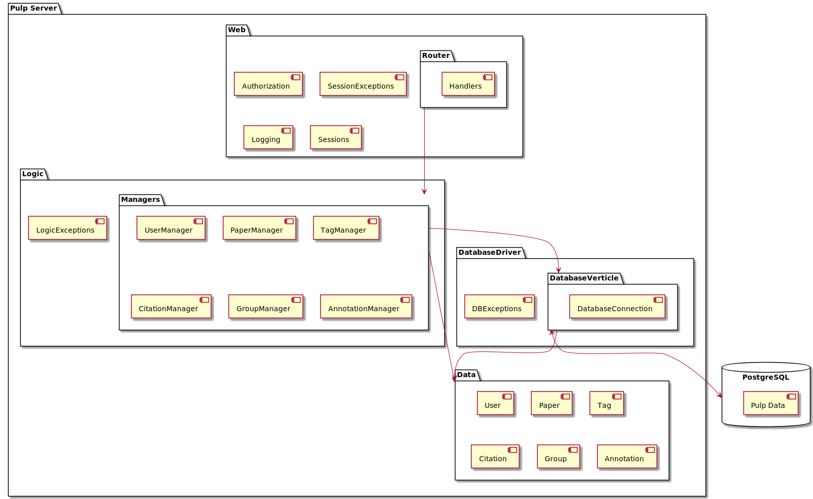

class: center, middle # Pulp Contributors: Jonathan Boal, Jadon Fowler, Hannah Larreau, Christopher Murphy, Charles Saluski --- # Agenda 1. Team 2. Project 3. Design 4. Demo 5. Evaluation 6. Conclusion --- name: team # Introduction * Jonathan Boal - Bachelor's of Science in Computer Science; Emphasis of Security * Jadon Fowler - Bachelor's of Science in Computer Science * Hannah Larreau - Bachelor's of Science in Chemistry - Computer Science Minor * Christopher Murphy - Bachelor's of Mathematics; Emphasis of Statistics - Computer Science Minor * Charles Saluski - Bachelor's of Science in Computer Science --- name: project # Project ## Why Pulp? * Why: Organizing literary research is hard * Goal: Help organize research papers and facilitate more discovery ### Value Statement We are a collaboration platform that enables academics to be more effective in their literary research by enabling more effective searching and collaborative annotations. ####Pages Implemented: 1. User creation 2. Login/Logout 3. Profile viewing and editing 4. Paper creation and viewing 5. Tags --- name: design # Design * Java, Vertx, MVC * --- name: design ### Architecture  --- name: demo # Demo [Demo Video](https://www.youtube.com/watch?v=T7nLQfr48Gc) --- name: evaluation # Evaluation --- name: conclusion # Conclusion -- * Trajectory -- - It was rough -- * Learned -- - Everything - Have a lot to learn -- - Vert.X framework - Back end web development - Group work is difficult! - Everyone has a different experience level coming in - Brushing up on Java --- # Conclusion ### Hindsight * Better onboarding - Tuesday we found a great Udemy course on Vert.x, should've looked earlier and assigned it week 1. * More popular and documented framework - Vert.x 4 released December 2020, resources not updated * Familiar programming paradigm - Vert.x is an async framework, we should've gone for imperative -- ### Lessons * Communicate capabilities! * Learn early * Don't incorporate unfamiliar technologies * If possible, start with a full stack already setup - Docker compose, with database and example site, and working automated deployment.